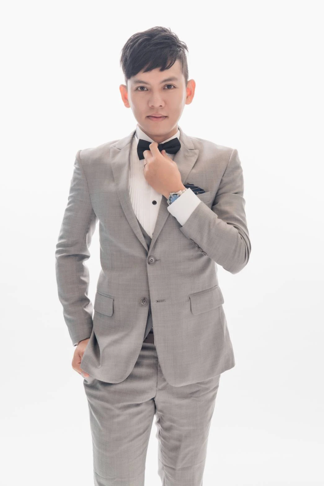
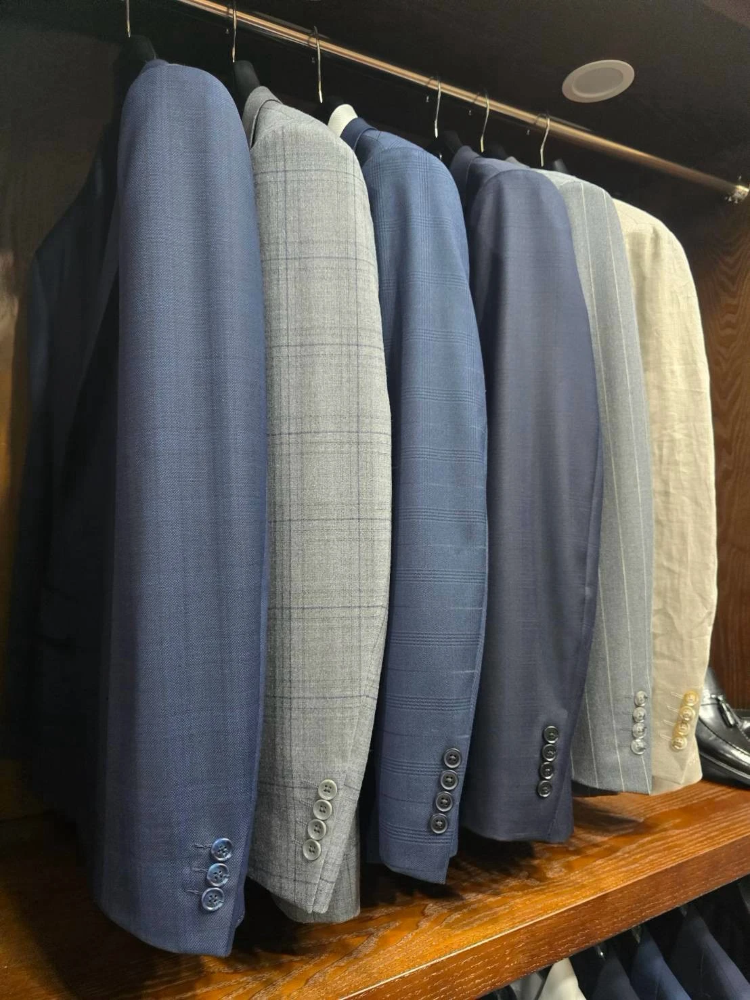

日常商務西服
以俐落輪廓與容易搭配的色系，陪伴會議、工作與正式會面。

MADE FOR YOUR EVERYDAY
好看的服裝，也應該讓你穿得自在。
從需要頻繁活動的工作日，到婚禮、典禮與正式會面，場合與習慣都會影響適合的版型。帶著你的想法或參考照片，讓我們從穿著需求一起討論。
以俐落輪廓與容易搭配的色系，陪伴會議、工作與正式會面。
依穿著需求討論外套、背心、裙裝或褲裝，讓整體比例更適合自己。
從色調到細節搭配，為婚禮與典禮等場合建立完整的穿著方向。

DETAILS MAKE THE DIFFERENCE
面料的觸感、光澤與垂墜感，會改變同一個版型的表情。除了外觀，也一起考量季節、穿著頻率與整理方式。
YOUR TAILORING JOURNEY
說明場合、品項、穿著習慣與希望完成的時間。
討論款式、面料及報價，確認合適的製作內容。
依確認方案量身，安排製作與必要的試穿調整。
確認穿著狀態，了解照護與後續修改的聯繫方式。
GOOD TO KNOW
其他尺寸、款式與時程問題，
歡迎直接與我們聊聊。
可以先整理穿著場合、希望製作的品項與預計使用時間。如果有喜歡的風格或既有服裝照片，也能作為討論參考。
依款式、面料、件數及製作安排而不同。請在諮詢時說明使用日期，我們會依具體需求討論報價與可安排的時程。
可以詢問女士外套、背心、裙裝與褲裝等搭配需求。實際可製作的款式與面料，會於諮詢時確認。
請先聯絡我們並說明服裝狀況。可修改範圍、處理方式及費用依實際狀況確認；日常清潔請以服裝洗標為準。
LET’S MAKE IT YOURS
告訴我們你的需求，一起找到合適的款式與製作方向。